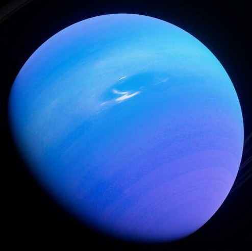

Uranus: The Ice Giant with a Twist
Introduction

Uranus is the seventh planet from the Sun and one of the four giant planets in the solar system. Classified as an ice giant, it is famous for its extreme axial tilt, which causes it to rotate almost on its side. This unusual orientation leads to bizarre and extreme seasons unlike any other planet. Uranus appears blue-green due to methane in its atmosphere and takes 84 Earth years to complete one orbit around the Sun.
Formation and Evolution
Uranus formed about 4.5 billion years ago from the solar nebula, a vast cloud of gas and dust left over after the formation of the Sun. Its icy composition distinguishes Uranus as an ice giant with a dense icy mantle surrounding a small rocky core.
A massive collision or gravitational interaction likely caused its extreme axial tilt of ~98°, influencing its long-term evolution, magnetic field, ring system, and moon orbits.
Key Characteristics
- Uranus is an ice giant composed mainly of water, ammonia, and methane ices.
- Its blue-green color comes from methane absorbing red light.
- Coldest atmosphere in the solar system: down to 49 K (-224°C).
- Winds reach speeds of up to 900 km/h.
- Extreme axial tilt (~97.77°) causes rotation on its side.
- No solid surface; made of swirling fluids and dense gases.
- Tilted and offset magnetic field produces irregular auroras.
Layers of Uranus Atmosphere
- Troposphere – Clouds, storms, most weather activity
- Stratosphere – Haze and hydrocarbons
- Thermosphere – Extremely cold and sparse
Main Gases:
- Hydrogen: ~83%
- Helium: ~15%
- Methane: ~2.3%
- Trace gases: Ammonia, water vapor, hydrogen sulfide, acetylene, ethane
Internal Structure:
- Upper Atmosphere: Cold, hazy
- Icy Mantle: Dense fluid of water, methane, ammonia
- Core: Small rocky core
Orbits and Motion
- Orbital Period: 84 Earth years
- Rotation Period: ~17 hours 14 minutes
- Distance from Sun: ~19.2 AU (2.87 billion km)
- Extreme Seasons: Each pole gets 42 years of sunlight/darkness
- Total Moons: 28 known
- Major Moons: Titania, Oberon, Umbriel, Ariel, Miranda
- Rings: 3 narrow rings of ice particles and dust; orbit sideways
Key Missions
- Voyager 2 (1986): First and only spacecraft to visit Uranus. Discovered 10 new moons, faint rings, and tilted magnetic field.